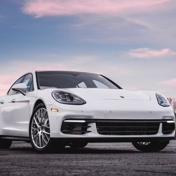
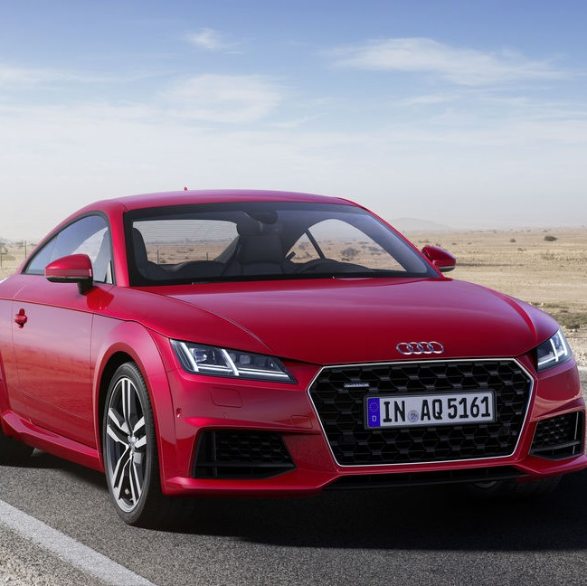
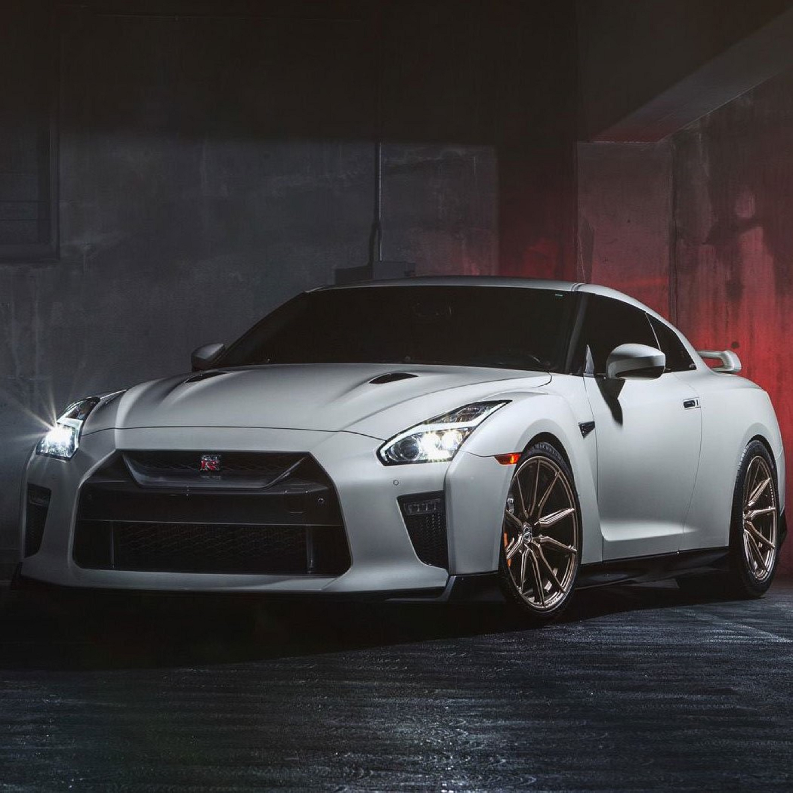
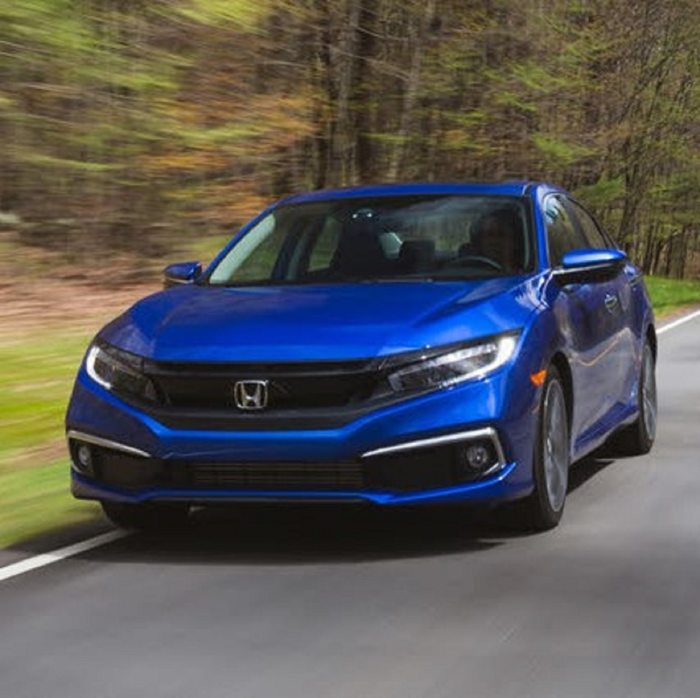
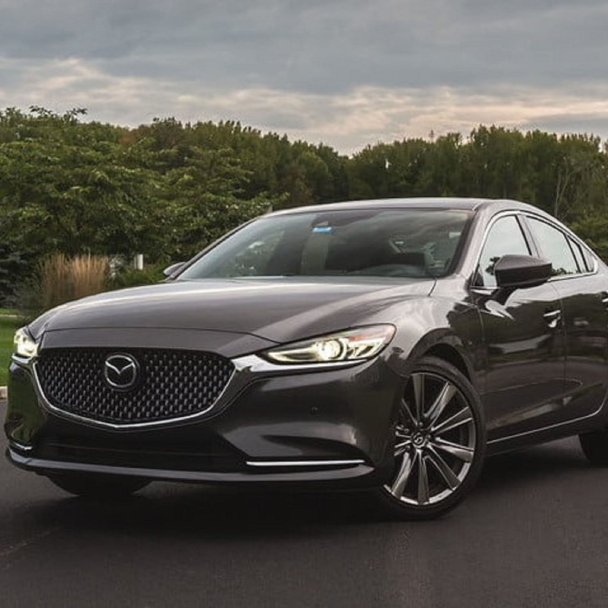

Porsche Panamera 4S .2018"
The Porsche Panamera is a full-sized luxury vehicle (F-segment in Europe) manufactured by the German automobile manufacturer Porsche. It is front-engined and has a rear-wheel-drive layout, with all-wheel drive versions also available.
Features:
Porsche Traction Management
Driving condition are constantly monitored, enabling the system to respond to variety situations.
Porsche Ceramic Composite Brake (PCCB)
PCCB have a diameter of 420mm at the front and 390mm at the rear, features with 10-piston aluminium monobloc fixed brake calipers to provide braking force.
Specs:
Power(kW)/(PS): 320kW/440PS
RPM range maximum power: 5,650 - 6,600 r/min
Top speed: 289km/h
More Specs: Porsche Panamera 4S
Book NowAudi TT Coupé .2019"
Audi TTs comes equipped with new quattro permanent all-wheel drive fitted as a standard and rear-biased. Making dynamic driving even more controlled. S-specific elements such as the four oval tailpipes make it unmistakeable. Innovative technology implemented in the drive system as well in the design of the controls and displays – including the Audi virtual cockpit – distinguish the coupé.
Features:
Audi virtual cockpit
The Audi virtual cockpit amalgamates the functions of a central MMI monitor and a conventional instrument cluster within a unique 12.3‑inch TFT display. All functions and services are visualised using brilliant graphics with a three-dimensional feel and detailed effects. The driver has a choice of two views – the classic view and the “infotainment” mode.
Audi Matrix LED headlights
The benefits of Audi Matrix LED headlights include not only better light but also more safety, excellent efficiency and an attractive design. Audi Matrix LED headlights split up the LED high beam into numerous small individual diodes that work in tandem with upstream lenses or reflectors
Specs:
Transmission: 7-speed automated manual
Cylinders: Inline 4
Range In Miles (Cty/Hwy): 333.5/449.5 mi.
Horsepower: 228 hp @ 5000 rpm
More Specs: Audi TT Coupé
Book NowNissan GT-R .2017"
GT-R rewrites the laws of sports car aerodynamics, redefines supercar performance, and gives you 4-season thrills. 4 seats, and a handcrafted interior. Mid-engine exotics, you've been warned. This is tech that breaks rules and shatters records.
Features:
Programmable Multi-Fuction Display
GT-R rethinks the way the driver receives information. Multiple, easily accessed screens – including five programmable and one factory preset – are an innovative way the driver can get immediate feedback to key performance parameters.
NISSANCONNECT® Services Powered BY SIRIUSXM®
With NissanConnect Services, you have a selection of plans and services like customizable alerts and emergency response.
Specs:
Horsepower: 565/600
Engine: GT-R 3.8-L TWIN-TURBO V6 ENGINE
Torque LB-FT: 467/481
Aerodynamics: GT-R AERODYNAMICS - PURE ALCHEMY
More Specs: Nissan GT-R
Book NowHonda Civic 1.5 TC .2018"
The 10th generation Civic is a revolution in design, in power and in innovation. So ride with spacious comfort and ride on safety. Ride to the horizon for wherever the road may lead you, keep chasing your dreams. Keep riding on.
Features:
Electric Parking Brake EPB
The Electric Parking Brake takes the place of conventional hand brake to keep your car stationary with the pull of a button
Remote Engine Start
In your hands is your ability to activate your engine and cool your car from afar. The Remote Engine Start ensure your civic is comfortably cool even before you step inside.
Specs:
Engine Type: 4 Cylinder, 16 Valve, DOHC VTEC TURBO
Maximum Power[PS(kW)@rpm]: 173(127)@5,500
Maximum Speed (km/h): 200
Acceleration 0 - 100km/h (seconds): 8.2s
More Specs: Honda Civic
Book NowMazda 6 Skyactiv 2.0L SDN.2018"
Mazda 6's confident stance and athletic form are the vision of Mazda’s ‘KODO — Soul of Motion’ design. KODO captures the very instant energy becomes motion. It’s the muscular beauty you see when an animal pounces, or when a human leaps into action.
Features:
Mazda’s i-ACTIVSENSE
Mazda6 comes equipped with many of Mazda’s i-ACTIVSENSE advanced safety technologies to assist the driver to avoid potential hazards or help minimize damage as a result of unavoidable impact.
Smart City Brake Support (SCBS) Front
At forward speeds of 4-30km/h, SCBS monitors the vehicle in the front to assess the likelihood of a collision. If a high risk is detected, it issues visible and audio warnings and primes the brakes for a faster response. If the driver doesn’t brake, SCBS brakes automatically.
Specs:
Engine Type: SKYACTIV-G 2.0L 4 Cylinder DOHC 16 Valve
Maximum Power (HP/RPM): 162/6000
Maximum Speed (km/h): 205
Fuel Efficiency: 6.5L/100km**
Transmission: SKYACTIV-DRIVE 6-Speed Automatic With Manual Shift Mode
Book Now
More Specs: Mazda 6 Skyactiv